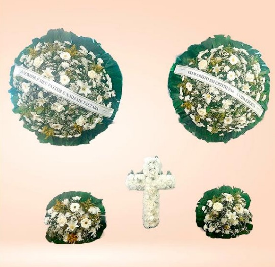

Coroas de flores e conjuntos para homenagens, com composições reais, preços claros e entrega rápida em velórios e cemitérios da Grande São Paulo.
Coroas entregues com agilidade em velórios e cemitérios da região
Fotos verdadeiras de cada arranjo — sem imagem ilustrativa
Valores claros, do modelo mais simples ao conjunto completo
Fale com a gente e finalize seu pedido em poucos minutos

A Velattus mantém um catálogo próprio de coroas de flores e conjuntos para homenagens — composições reais, com preços claros e entrega combinada diretamente com nossa equipe.
Ver flores →A Velattus é uma floricultura especializada em coroas de flores e composições para homenagens, atendendo famílias da Grande São Paulo com agilidade e respeito.
Cada arranjo é montado à mão pela nossa equipe, com flores frescas e composições reais — o que você vê no catálogo é exatamente o que chega ao velório ou cemitério.
Atendimento rápido pelo WhatsApp: escolha o modelo, confirme o local de entrega e pronto.
Modelo simples, com crisântemos e flores coloridas. Ver modelos →
Composições com rosas, gérberas e tangos. Ver modelos →
Modelo mais completo, com orquídeas e lírios. Ver modelos →
Coroa dupla, maior, para uma presença mais marcante. Ver modelos →
Composições duplas com rosas, lírios e tangos. Ver modelos →
O modelo duplo mais completo do catálogo. Ver modelos →
Composições completas para montar a sala do velório. Ver modelos →
Fale com a gente pelo WhatsApp e te ajudamos a decidir. Falar com a gente →
As flores chegaram lindas e no horário combinado, exatamente como no catálogo. Fizeram toda diferença na homenagem.
Atendimento rápido pelo WhatsApp, montei o pedido em poucos minutos e a coroa ficou ainda mais bonita pessoalmente.
Preço justo e composição impecável. Recomendo a Velattus para quem precisa de flores com agilidade e cuidado.
Fale com a nossa equipe pelo WhatsApp e monte sua homenagem em poucos minutos.